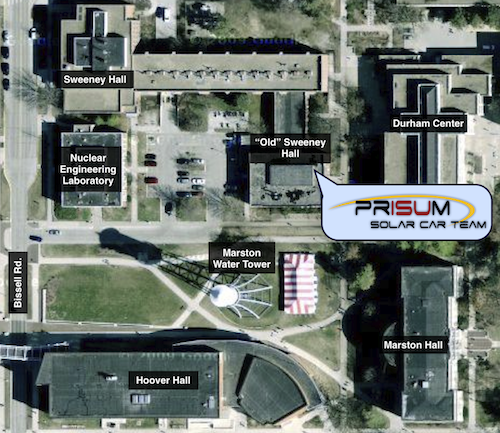

Contact Us
Email & Postal Address
General Inquiries
solarcar@prisum.org
Outreach Email
outreach@prisum.org
Mailing Address
Attn: Team PrISUm
Iowa State University
2620 Howe Hall
Ames, IA 50011
Package Shipping Address
Attn: Team PrISUm
Iowa State University
1043 Black Engineering
Ames, IA 50011
Location
Team PrISUm's facilities located on the western part of campus in "Old" Sweeney Hall. Feel free to stop by our office anytime! There are always team members around who would be glad to show you the cars, answer any questions, and help get you involved with the project.
Find us in Google Maps
Physical Address
Iowa State University
1322 "Old" Sweeney Hall
Ames, IA 50011
Outreach
Giving back to the community is an important commitment of Team PrISUm. Year-round, PrISUm members tour the midwest United States visiting elementary schools, middle schools, high schools, community colleges, and community events in an effort to educate the masses about renewable energy, STEM, and the importance of education. Team PrISUm reaches an average audience of 50,000 people per year while participating in events as small as a classroom field trip to our garage or as large as participating in the Des Moines Concours d’Elegance. While on outreach events, team members explain the process of designing, manufacturing, and racing a solar powered vehicle.

SunRun
An annual tradition of Team PrISUm is to participate in the SunRun, a week-long event dedicated to outreach. While on the SunRun, the team travels over 1,000 miles across the state of Iowa in an attempt to visit as many schools, sponsors, and events as possible.

Garage Tours
Generate content for here.